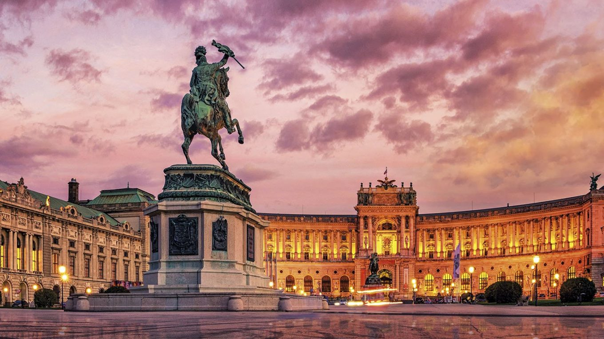
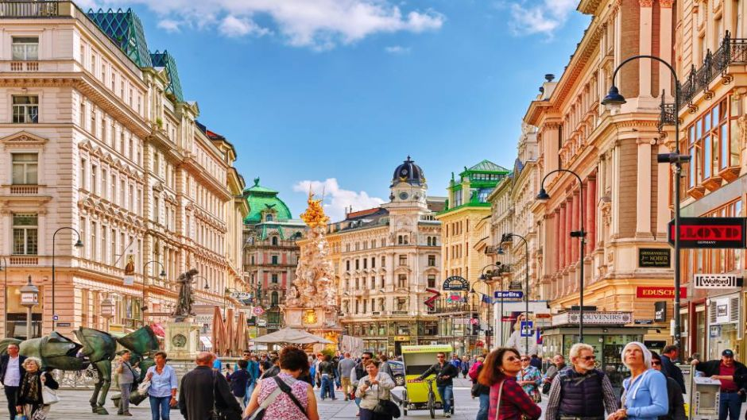
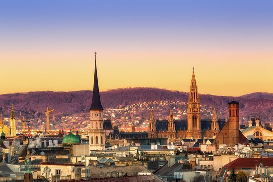

Trumpos žiemos atostogos Vienoje!
Skrydis iš Vilniaus ir 5 n. viešbutyje – 161 €!
Ką manai apie trumpas atostogas imperatoriška prabanga ir elegancija garsėjančioje Austrijos sostinėje, Vienoje? Susipažinsi su miesto istorija, pasigrožėsi nuostabia architektūra, paskanausi garsiojo austriško štrudelio ir paklaidžiosi žavinguose miesto parkuose. Kaip tau toks atostogų planas?
Ką nuveikti Vienoje?
- Užsuk į miesto simboliu vadinamą Šv. Stepono katedrą – tai viena didžiausių ir gražiausių Austrijos bažnyčių.
- Pasivaikščiok Hofburge – didžiulę teritoriją miesto centre užimančių imperatorių rūmų teritorijoje.
- Keliauk pasigrožėti Vienos opera, kuriai vadovavo R.Štrausas, G.Maleris, H. von Karajanas, neohelenistinio stiliaus Parlamento pastatu su priešais įsitaisiusiu teisingumo deivės Atėnės fontanu, Rotuše, Nacionaliniu teatru.
- Apsilankyk barokinio stiliaus Šenbruno rūmuose, apsuptuose prabangių parkų, alėjų, statulų bei fontanų. Šis pastatas yra vienas svarbiausių Vienoje. Čia gimė ir augo Prancūzijos imperatoriaus Napoleono Bonaparto sūnus, taip pat ir gausi imperatorės Marijos Teresės šeima.
- Būūūūtinai užsuk į tradicinę Vienos kavinukę išgerti puodelį kavos ir paragauti austriško štrudelio!



Aušrinė Ratkutė